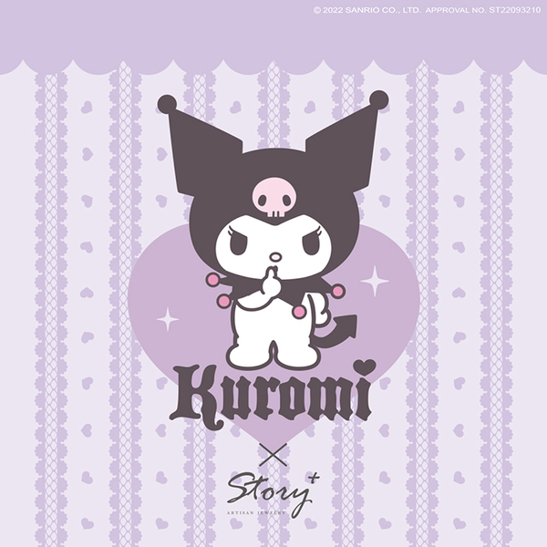

角色介紹
酷洛米（英語：Kuromi)，是三麗鷗一隻以黑色惡魔頭巾兔子造型的女性卡通形象，在2005年10月31日誕生。
在動畫劇集《我愛美樂蒂》系列初次出場。酷洛米原是美樂蒂的好友兼同學，但美樂蒂時常傷害到酷洛米，故反目成仇視美樂蒂為敵人。
酷洛米筆記，全部都是記載著自己被美樂蒂傷害到的事。總喜歡說諷刺的話，像一隻小惡魔，但還是很可愛。
酷洛米在馬里蘭樂園因思想偏激、經常故意捉弄美樂蒂，因採摘皇了宮花園的花草、騎著三輪單車在街上亂駛，和偷去皇宮一大批麵包這幾項罪名而被判入反省室（即監獄），
只是後來逃獄到人間去，所以她是馬里蘭樂園的通緝犯。行為舉止雖然粗魯，但實際上就像一般女孩那樣，非常喜歡帥氣的男生。喜歡的食物是醃大蒜。
酷洛米有一位部下名叫巴庫（Baku），是一隻以貘 (妖怪)的造型和傳說所設計的角色。酷洛米在他最沮喪的時候幫他加油打氣，又為了他的十多個挨餓的弟弟而到皇宮偷麵包。
即使巴庫經常被酷洛米拳打腳踢，仍然忠心耿耿。巴庫有飛行的技能，所以也同時充當酷洛米的私人座駕。
除此之外，酷洛米亦是酷洛米軍團（Kuromi's 5）的首領，有四位組員追隨，他們四位分別名叫汪咪、喵米、空米、啾米。
